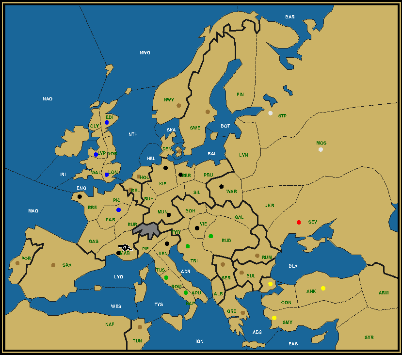
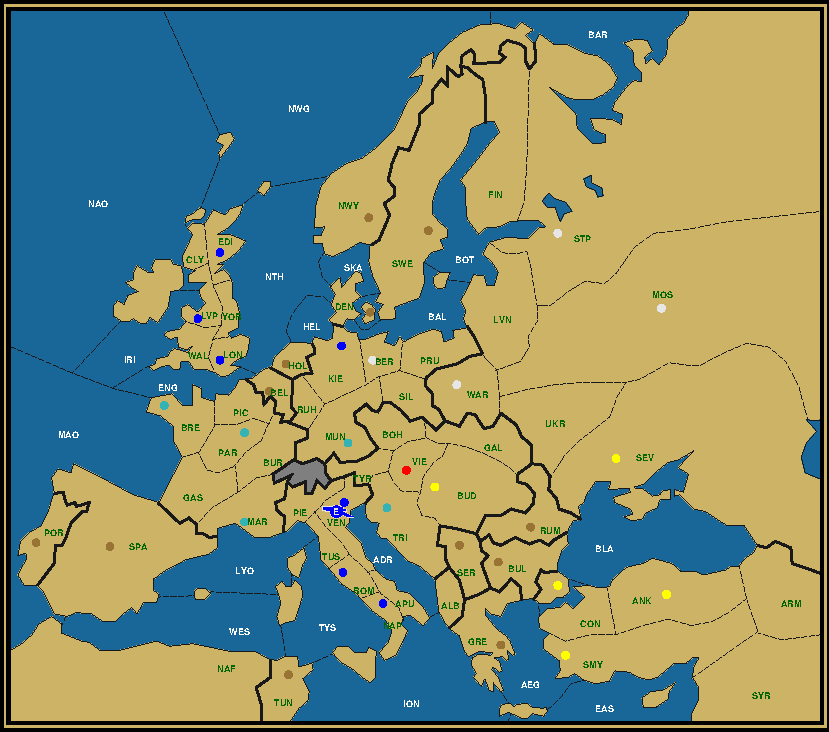
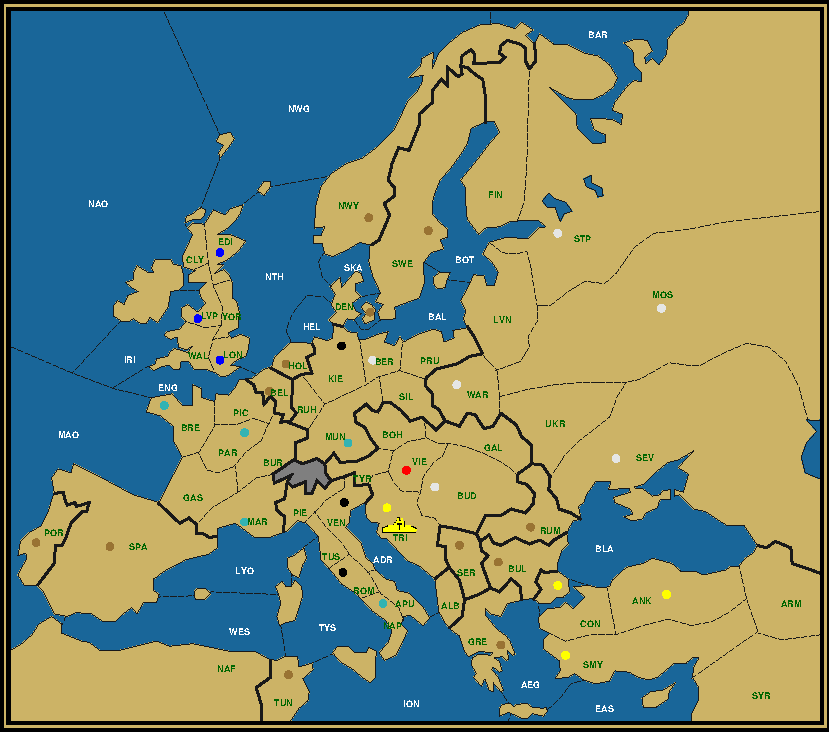

Last Man Standing is a puzzle on the Diplomacy board, whereby the whole board gets reduced to a single unit. This unit must reach its final destination in a mere four game years, without any power capturing any neutral centers and with all powers still possessing at least one unit at the end of the second year. Your goal is to reconstruct the complete game history from the map given. For more details, read the LMS Roll Call. Let's take a moment to reflect on how far we've come along this LMS journey. Starting with Berlin, we've first targeted the capital city of each power in increasing order of difficulty, accompanied by another home center of the same power as a second destination. We rounded off this first set with a double solution for Liverpool, the starting city of the army that became the sole survivor in all of the capital city puzzles. Combined that accounted for twelve different destination home centers. We then had a short intermezzo on the Canton map before continuing on the Standard map with the remaining ten home centers. Going in the same order as in the first set, we've dealt with the Germans, the Russians, and now the Italians and the Austrians. That just leaves four home centers from three powers: Marseilles, Constantinople, London and Edinburgh. If you think about it, it's kind of crazy that all these different centers could serve as an LMS destination in the same four year time span without ever needing to change anything about the starting position. There's no a priori guarantee that this should be so. Indeed, the board was not constructed with LMS in mind. We'll see later that this doesn't work as well on the Canton map or other maps for that matter. As we tackle these last four centers, the temptation becomes bigger to shake up the starting position, because of the staggering difficulty to find a solution the normal way. The idea is simple. To speed up the dislodgement process, choose unit types that can reach the final destination or major corridors on the map faster. A fleet in Smyrna instead of Ankara can reach the Ionian Sea in two turns instead of three. Moving the St. Petersburg fleet over to the North Coast cuts down the distance to the North Sea by two. An army in Trieste can cross the continent much more easily than a fleet. And why not start with a fleet instead of an army in Rome if you want to make it to London or Constantinople? Will we eventually have to give in on this point? Find out in this and the next issue. However, if you ever find yourself wanting to create your own LMS puzzle, but getting stuck, or perhaps you want something truly unique or even more challenging, consider changing the starting position in various ways. Or why not make Switzerland passable? It's up to you. Mission: The Napoleonic WarsNapoleon Bonaparte was born and raised in Corsica, the island in the Mediterranean closest to the French main land. He rose to prominence in the siege of Toulon, an important harbor close to Marseilles and home to the French Mediterranean Navy. The city at the time was under British control, following an invitation by the Royalists in the wake of the French Revolution that had culminated in the decapitation of the King and Queen by way of the guillotine, an action that had upset the various monarchies across Europe. The Republicans, thanks in large part to Napoleon Bonaparte, still only an artillery captain, succeeded in liberating the city, but not without the loss of a great part of the French Navy fleet, which was set ablaze by the British during their retreat. One of the reasons perhaps why the French never achieved naval dominance during Napoleon's time in power.

German Army to Marseilles, After Winter 1904 Austria (0/1) Sev England (0/4) Edi Lon Lvp Par Germany (1/8) A Mar / Ber Bre Kie Mar Mun Ven Vie War Italy (0/4) Bud Nap Rom Tri Russia (0/2) Mos Stp Turkey (0/3) Ank Con Smy On this map you are to lead a German army on a path ending in Marseilles that includes various Napoleonic battlefields, without ever requiring to visit the same province more than once. Another curiosity is that a 1902 sweep is conducted in Turkey, resulting in the removal of four units, where none of the sweepers is Russian. The starting position remains the same as always. Mission: The CrusadesConstantinople, also called Byzantium (and nowadays Istanbul) was the capital of the Byzantine empire, as well as the capital of Turkey until shortly after the end of World War I. For most of its existence as capital of the Byzantine Empire it was the most populous and richest city in Europe. And then began the Crusades. As the capital of the Orthodox Church it was a welcome stop for the Christian crusaders on their way to the battlefields in the Holy Land against the Islamic enemy. The Byzantines were in fact sponsors for the Crusades as an effort to turn back the Muslim powers encroaching on their land. They would provision the crusaders with food and extra troops. There was however also a rivalry between the Orthodox and the Latin (Roman-Catholic) Church, with their capital (or Holy See) in Rome, as to which was the principal Christian religion. A succession crisis after the deposition of the Emperor, where one contender requested the support of the mostly Italian (Venetian, Genoan) crusaders, led to the Sack of Constantinople in 1204 and the short-lived Latin Empire comprising the city of Constantinople and Northern Greece under Italian domination until the Byzantines recovered their capital a few decades later. Greatly weakened after the looting, plundering and depopulation they would never recover to their former glory, gradually losing territory to the Ottoman Empire until the Siege of Constantinople in 1453 that led to the end of the Byzantine Empire. Austrian Army to Constantinople, After Winter 1904 Austria (1/3) A Con / Con Smy Vie England (0/1) Edi France (0/4) Bre Lvp Mar Par Germany (0/7) Ank Ber Kie Lon Mos Mun War Italy (0/6) Bud Nap Rom Sev Tri Ven Russia (0/1) Stp Not the Italians, but the equally Catholic Austro-Hungarians lead the charge towards the Byzantine capital. The enthusiasm to participate from their Western counterparts however is decidedly low, with a record number of units finishing each other off in and around the North Sea. Once again the starting position remains unchanged. That Italian tenacity is also honored in this solution. Austria, which has Trieste as a home center, has no significant role in killing off (through dislodgement) the units of the other powers. Instead this role is taken up almost exclusively by Italy, who becomes the sole sniper country left after the first year. Reiterating from the LMS Roll Call, a sniper country is a country that loses its units not through dislodgement, but through Winter disbands due to owning less centers on the board than units. In many solutions there will be two or three until late in the game, but not here. To accomplish this Italy might need to temporarily expand its unit size. Debriefing: Death in Venice — Army London to Venice

Army London to Venice, After Winter 1904 We have our work clearly cut out this time. Not only do we need to build an army in London after the first year, we also need to let it conquer the whole of Italy, which means it should immediately be convoyed to the boot and pick off an Italian home center each subsequent year. To be able to build an army, England must first conquer a center, since dislodging a fleet is not too practical, although it could be done in the North Sea, Sealion-style. But we see that Kiel is English, suggesting a first year convoy of army Liverpool to Kiel, precluding a dislodgement of the fleet in the North Sea, but allowing a build from the acquisition of Kiel instead. A convoy from London to Naples or Rome could be done in Spring of 1902, but would require the French and the Italian fleet and both English fleets in the chain. Since one English fleet is involved in the convoy to Kiel, and so still in the North Sea in Spring, that scenario is not possible. We'll need to wait until the Fall, or we could drop it off at a halfway point, such as Tunis, and use a second convoy to cover the final stretch. This has the advantage that we can already start to roll up the chain in Fall. Let's therefore send Fleet Naples to the Western Med in 1901 and put fleets London and Brest in Mid-Atlantic Ocean and English Channel. Note that since fleet Edinburgh and fleet Kiel are still in the North Sea and Heligoland Bight respectively, we actually have a chain that also could transport a newly built army in Edinburgh, or even the original army in Liverpool (currently in Kiel) all the way to Tunis. The choice of army London is purely a poetic choice to fit in the "Sherlock Holmes visits Venice" narrative. After the convoy the convoy chain folds up with fleet Naples at one end and fleet Kiel at the other. It even absorbs fleet St. Petersburg bursting into the North Sea at the end of 1902. But what happens on land? For the German fleet to disband at the end of 1903, Germany needs to lose its last supply center that year. This center could be Munich or any of the Austrian home centers, except Budapest. Why not Budapest? For one, Germany cannot take it in 1901. And two, if army London is in Rome at the end of 1903, it cannot become LMS if the other raiders are in Budapest and Trieste. Since both are supply centers, the sniper (in Tyrolia or the Adriatic Sea) would be forced to support the army in Budapest first to Trieste and then to Venice, making that Turkish army the LMS. To avoid that and allow army London to survive, we can conclude that only two raiders can be on supply centers at the end of 1903. Since Vienna is still Austrian, this favors Trieste as the most likely candidate besides Munich to serve as Germany's last center. We already know that Budapest must be empty in 1903. This means that Turkey must take it in 1902. The army can then either go to Trieste and perish there at the hands of the French, or dislodge the French itself and move on to Tyrolia. The key then is to know in which order France captures Munich and Trieste, and in which years. France could already capture Munich in 1901. It must however then deal with the English army in Kiel and the Russian army in Berlin. With the assistance of the German fleet in the Bight it could attack Kiel, then move back to Munich to eliminate the Russian in turn. In this scenario Trieste would be the last French center captured. France could also opt to stay out of Munich for as long as possible and use army Marseilles to capture Trieste in 1902. To make this work, Russia would need to send its army from Berlin to Tyrolia in 1902, while army Paris moves back and forth to Ruhr to eliminate the English army in Kiel. The ultimate answer comes from the Turkish corner of the map. Turkey has all its home centers still intact, but Russia has only lost one. This makes a traditional Russian Black Sea sweep highly unlikely. Instead Turkey must send its fleet out into the Aegean and convoy the second army, the one not moving to Budapest, to the Italian peninsula. Austria provides the other fleet in the convoy. The Russian fleet can follow from behind to dislodge the Turkish fleet from the Aegean. Then in 1903 it has to push up to Italy. But can it be eliminated? Let's go back to the start. Remember that army London was going to be dropped off in Tunis in Spring 1902. To cross over to Naples it would like to make use of the Austrian fleet in the Ionian. But that fleet is already occupied supporting the Russian fleet into the Aegean Sea against the Turk. We need Italy to build a fleet and put it into the Tyrrhenian Sea in order to execute the convoy. This gives us one potential candidate to dislodge the Russian fleet after it enters the Ionian. Alas, that fleet would be completely in the wrong spot to assist army London in the final year towards Venice. And the two centers taken in 1903 are already reserved to remove the Italian and German sniper fleets in and around the North Sea. Hence this second Italian fleet will already have to disband at the end of 1902, meaning the Russian fleet will still be around in 1904. Which in turn means that the last German center captured is not Munich, but Trieste, as a fourth unit in Tyrolia is no longer on the table. At the start of 1904 we have an English army in Rome, a French army in Trieste, a Russian fleet in Apulia obviously and an Italian unit in… Yes, where? Do you know? Do you know which type of unit? Whether you did or did not, check the solution. Army London to Venice, After Winter 1901 Click to view the complete history in a separate window Season: 1901. The Foreign Ministry brings some troubling news to Sherlock Holmes. The Sultan of Suwat has been found dead in Venice under very mysterious circumstances. Would he be so good as to assist Scotland Yard in clearing up the case? Army London to Venice, After Winter 1902 Click to view the complete history in a separate window Season: 1902. Sherlock Holmes and Dr. Watson board a boat destined for Venice, but pirates block the Strait of Sicily, forcing them to land in Tunis. They quickly book a ferry that takes them across the Tyrrhenian Sea to Naples, where they will continue their journey on land. Army London to Venice, After Winter 1903 Click to view the complete history in a separate window Season: 1903. Traveling through the Boot, Sherlock beats off several attempts by Turkish spies to sabotage his mission and conceal the truth he's about to expose. Army London to Venice, After Winter 1904 Click to view the complete history in a separate window Season: 1904. At last he arrives in Venice, but the Palace is empty. The only man who can tell him the truth is the Vizier of Suwat, but the man has fled. He's a fugitive. Where can he be? In Trieste, the Great Detective deduces. A fugitive in Trieste. Debriefing: Fugitive in Trieste — Fleet Ankara to Trieste

Fleet Ankara to Trieste, After Winter 1904 Yes, indeed, we continue with the city that's just a hundred miles away from Venice. This time we're told that the Italians do all the heavy lifting after the first year. The Austrians and Germans can take a back seat. Notice also that apart from these three powers, all the other powers have retained all of their centers. We will later prove that not one home center was ever taken by another power and then relinquished to the original owner. Remarkable indeed. Also, the victorious Turk took no other center than Trieste. This immediately tells us something useful. It means that at the start of the final year the Turkish fleet was not on a supply center, and thus that at most two raiders were on one. Assuming elimination of the Northern fleets still requires a third year culling, then two centers is the minimum needed. Furthermore, it's most likely that one of these is immediately to the left of Trieste, thus Venice, and the other immediately to the right, thus Budapest, because Vienna is still Austrian. A center two spaces removed such as Munich or Rome would not mesh well with a fleet victor. At the same time, given Venice and Budapest occupied at the start of 1904, the Turkish fleet must logically be in Apulia or the Adriatic Sea, and not for example in Albania. In the case of Adriatic Sea this would require an Italian sniper army in Tyrolia, while with Apulia an Italian sniper fleet in the Adriatic Sea itself would also be a possibility. The units in Venice and Budapest are evidently armies, since German fleet Kiel cannot reach Venice in six turns, and Budapest is inland and thus only accessible to a Russian army. With the After Winter 1903 map fairly well defined, let's turn to the greatest obstacle, the elimination of the Northern fleets without the assistance of either a German or French sniper fleet after the first year. Clearly we will need to build a second Italian fleet and send it towards the Mid-Atlantic Ocean, which it reaches in three turns. The fourth turn could take it one sea space further, but does it need to go that far? The fleet furthest away as always is the Russian fleet in St. Petersburg, followed by the German fleet in Kiel. While fleet Kiel can be removed in the first Winter through loss of centers, the same doesn't seem to apply to Russia. However, we can remedy that by ambushing the Russian fleet in Livonia at the hands of fleet Kiel and army Berlin. Capturing Munich (French) and Berlin (Russian) at the same time will allow to immediately disband both German snipers. We only need to care about the English and the French fleets, as well as army Liverpool. In five turns fleet Edinburgh could reach as far as the Tyrrhenian Sea. However the bottleneck imposed by the Mid-Atlantic, combined with the need to take care of army Liverpool will prevent us to send the fleet that far. Western Mediterranean or North-Africa however are still in the cards. If Italy can get just North of the Mid-Atlantic and England just South of it, let's make the Mid-Atlantic itself the major battleground, just as the North Sea was in so many other puzzles. What to do with army Liverpool? We could capture London with fleet Brest, disband the army in Winter and retake London with an English fleet in 1902. But that would ultimately force us to send the second Italian fleet into the English Channel, something we'd like to avoid. Instead let's convoy the army out. To where? Not to Brest, because that again captures a home center from a power that's supposed to lose none. Picardy is too far North. Gascony would be a good spot if we intend to send it on to Trieste. It would be in Piedmont at the end of 1902, then get eliminated somewhere in 1903, presumably in a battle with the German army that ends up occupying Venice. But there's one more alternative, North-Africa. With all the fleets in and around the Mid-Atlantic, and the Italians moving through the Western Med, North-Africa is precisely where these fleets can combine to dislodge one unit after the other. Russia already lost a fleet in an ambush in Livonia in the first year. But it doesn't stop there. In order to prevent fleet Sevastopol from tailing fleet Ankara and eventually claiming victory itself, it gets ambushed by the Turkish armies in Armenia. The Turkish armies then in turn get convoyed to the European continent before being eliminated. To aid with that we'll build a second fleet in Venice, financed by the Italian capture of both Trieste and Budapest, and dispatch it into the Adriatic Sea. For good measure army Moscow also gets ambushed, also in the first year, this time by the Austrian armies in the Ukraine, both of which get disbanded in Winter. With that the stage is as good as set. Let's bring it in motion. 1901. The Vizier of Suwat flees towards Trieste with the Italians hot on his tails. He successfully evades them however and they stumble on to Budapest, but leave a force in Trieste nonetheless. Fleet Ankara to Trieste, After Winter 1902 Click to view the complete history in a separate window Season: 1902. The Turks send out their scouts, first to Albania, then to Apulia. The Italian police however proves to be less than cooperative. Fleet Ankara to Trieste, After Winter 1903 Click to view the complete history in a separate window Season: 1903. With their agents in the field falling into more traps, the Turks resort to an official delegation aboard a royal vessel. These dignitaries are treated with much more respect as they pay a visit to the Italian hinterland. Fleet Ankara to Trieste, After Winter 1904 Click to view the complete history in a separate window Season: 1904. Having promised to grant diplomatic immunity to the Vizier, Sherlock Holmes, who had embedded himself in the Italian forces, arranges a meeting between the Turkish delegation and the Vizier. All gets cleared up, the Keys of the Port of Suwat are handed over to the Crown Prince, ensuring that the Sultanate retains its independence. Preparations for the coronation of the new Sultan can go on as planned. The Vizier however remains in Trieste for a matter of the heart.
|